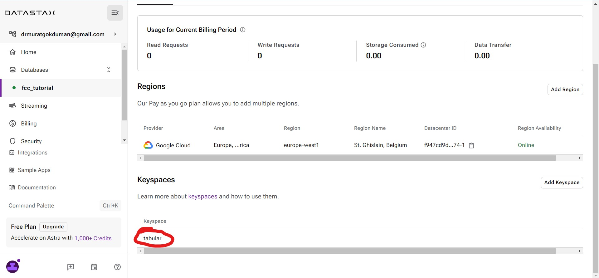
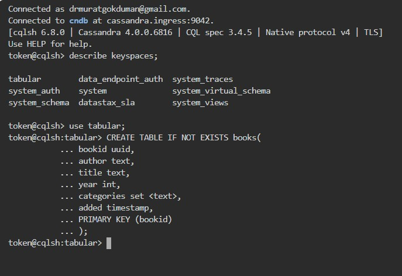
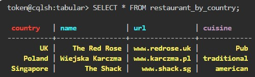
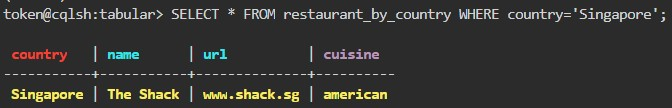
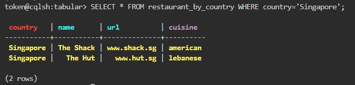
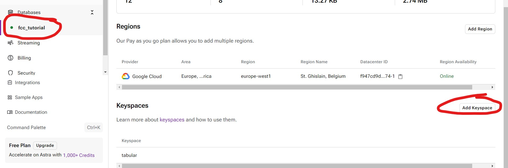
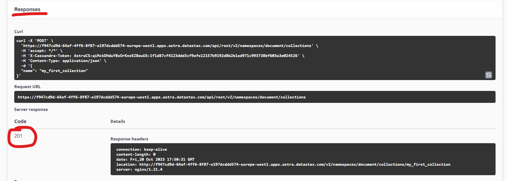
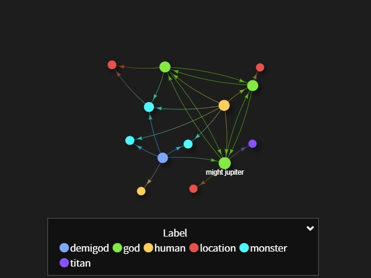

NoSQL Database
Giriş
Bilmeniz gereken ilk şey noSQL'in veritabanı yönetimine yönelik bir yaklaşım olduğudur. Anahtar değer, belge, y sütunu veya tablo ve grafik formatları gibi çeşitli veri modellerine izin verdiği için süper esnek olduğu düşünülmektedir. Bugün inceleyeceğimiz bu dört modelin yanı sıra yeni ortaya çıkan bir trend olan çoklu model veritabanları da bulunmaktadır.
Ancak resmi olarak noSQL veritabanlarının tanımlayıcı özellikleri ilişkisel olmamaları, dağıtık ve ölçeklenebilir olmaları olarak kabul edilmektedir. Dağıtık, iki farklı coğrafi konumdaki uygulamaları desteklemek için küresel olarak dağıtılmış makine kümeleri üzerinde çalışmayı ifade eder. Ölçeklenebilir olması ise noSQL veritabanlarının yaşam ölçeğindeki verileri depolayıp sorgulayabilmesinin yanı sıra yatay olarak ölçeklenen yüksek işlem hacmini desteklemesi anlamına gelmektedir. Buna ek olarak, aynı zamanda bölüm toleranslıdırlar, yani ağ bölümlemesinin varlığında çalışabilirler. Ayrıca yüksek erişilebilirliğe sahiptirler, yani bazı makineler çalışmadığında bile isteklere hizmet verebilirler. Veri replikasyonu yerleşik olduğu için bunu yapabilirler. Ve son olarak, ilişkisel olmayan ne anlama gelir? Bunu tam olarak anlamak için ilişkisel veritabanlarına bakmamız gerekir; ilişkisel veri modeli ve SQL, tek makinelerde çalışan ve dikey olarak ölçeklenen veritabanları için tasarlanmıştır. Bu konuya daha sonra biraz daha ayrıntılı olarak değineceğiz. Aslında, az önce bahsettiğimiz her şey ilişkisel veritabanlarının Atomicity (atomiklik), Consistency (tutarlılık), Isolation(izolasyon), Durability (dayanıklılık) ya da kısaca acid ile ilgili olmasının tam tersidir.
NoSQL'in nereden geldiğini anlamanız için ilişkisel veritabanlarından bahsediyorum, onlara ve SQL'e bakmamız gerekiyor. SQL, Yapılandırılmış Sorgu Dili anlamına gelir. İlişkisel veritabanları için kullanılır. İlişkisel derken, belirli bir yapılandırılmış veri kümesini depolayan satır ve sütunlara sahip bir tablolar koleksiyonunu kastediyorum. noSQL, ilişkisel olmayan ve ilişkisel veritabanları için kullanılır. Tamam, SQL'i düşündüğünüzde, ilişkisel veritabanlarında veritabanı yönetimi için Yapılandırılmış Sorgu Dili olduğunu ve katı olduğunu düşünün ve noSQL'i düşündüğünüzde? Peki, kelimenin kendisine bir göz atalım. noSQL, tamam diye düşünebilirsiniz, bu yüzden verilere erişmenin daha esnek bir yoludur. Yani SQL yıkılmış sorgu dilini kullanmamak. Basit, değil mi? Aslında yanılırsınız. SQL'in kullanışlılığı nedeniyle. Birçok noSQL veritabanı SQL desteği ekledi ve bu da geliştiriciler arasında noSQL'in aslında sadece SQL anlamına gelmediğinin anlaşılmasına yol açtı. Yani Yapısal Sorgu Dilini kullanabilir ya da kullanmayabilirsiniz, bu size kalmış.
Bir kez daha özetlemek gerekirse, SQL yapılandırılmış bir sorgu dilidir ve noSQL veritabanı yönetimine yönelik bir yaklaşımdır.
noSQL veritabanı kullanmanın iki ana nedeni vardır. Bunlardan ilki uygulama geliştirme verimliliğidir. Bir uygulama geliştirirken, herhangi bir şeye başlamadan önce verileri düzenlemek için önemli miktarda zaman harcanır. Düzenlemekten kastım, verilerin bellekteki veri yapıları ile ilişkisel bir veritabanı arasında eşleştirilmesidir. Başka bir deyişle, az önce bahsettiğimiz gibi SQL'i destekleyen bir veritabanı türü, ilişkisel olmayan bir veritabanı yöneticisi yaklaşımı olarak noSQL, uygulamaların ihtiyaçlarına daha iyi uyan bir veri modeli sağlayabilir ve uzun vadede hayatımızı kolaylaştırır. Veri modeli uygulamaya daha uygun olduğu için hata ayıklamayı ve kod yazmayı kolaylaştırır, ayrıca kolay evrime izin verir. İkinci neden ise büyük ölçekli verilerdir. Bildiğimiz gibi, günümüzde kuruluşlar sundukları hizmetleri ve diğer şeyleri iyileştirmek için mümkün olduğunca çok veri toplamayı sevmektedir. Ancak, büyük miktarda veriyi yakalamak ve bunları hızlı bir şekilde işlemek operasyon açısından pahalıdır. Bu nedenle, ilişkisel veritabanlarıyla bunu yapmak mümkün olsa da, büyük verileri ve işlemleri tek bir büyük veritabanı yerine noSQL veritabanlarının açıkça üzerinde çalışmak üzere tasarlandığı çok sayıda küçük ve daha ucuz makinelerde veya kümelerde çalıştırmak genellikle daha ekonomiktir. İlişkisel veritabanları için tipik olduğu gibi.
Sonuç olarak noSQL bir veritabanı yönetim yaklaşımıdır. Bir noSQL veritabanından bekleyebileceğimiz özellikler, ilişkisel bir veritabanının aksine ilişkisel olmayan bir veritabanı olması, yüksek performans, ölçeklenebilirlik, verim ve kullanılabilirliği korurken büyük ölçekli verileri yönetmek için tasarlanmış dağıtılmış bir veritabanı olmasıdır.
Şimdi, insanlar noSQL ve SQL'e baktıklarında, ikisini karşılaştırmak isteyebilirler. Ancak şimdiye kadar bunu yapamayacağımızı biliyorduk. Bunun nedeni bir kez daha noSQL'in bir veritabanı yönetim yaklaşımı olmasıdır. SQL ise bir sorgu dilidir. Yani tamamen farklı iki şey, noSQL veritabanlarından ilişkisel olmayan veritabanları olarak bahsetmeye başlamak ileride daha iyi olabilir.
Öyleyse devam edelim ve bunu değiştirelim. Böylece artık bunları ilişkisel veritabanlarıyla karşılaştırmaya başlayabiliriz. Bahsettiğimiz gibi, ilişkisel veritabanları 1970'lerin sonlarında öne çıkan bir dil olan bu yapılandırılmış sorgu dilini kullanır. Ve noSQL yalnızca Yapılandırılmış Sorgu Dili anlamına gelmez, bu dili veri almak için kullanmanıza veya kullanmamanıza izin verir. No SQL'in sahneye çıkışının 2000'li yıllarda olduğu belirtilmektedir. SQL ile veriler, sabit sütun ve satırlara sahip tablolar olarak modellenir. NoSQL veritabanlarında ise veriler yalnızca sabit satır ve sütunlara sahip tablolar olarak modellenmez. Bunun yerine, JSON belgeleri, düğümleri ve kenarları olan grafikler, anahtar değer çiftleri veya sütunların sabit yerine bir tablo içinde satırdan satıra dinamik olabileceği Y sütunu veya tablo veritabanları ile modellenebilir. Bir noSQL veritabanı ile şema esnektir. Bu, veriler için herhangi bir gerçek sabit yapı olması gerekmediği anlamına gelir. Veriler esnek bir şemada depolanabilir ve bu yaklaşım yüksek esneklik seviyesi sayesinde geliştirmeyi kolaylaştırabilir. İlişkisel bir veritabanında şema sabittir, katı veri tipleri vardır. Dolayısıyla, yalnızca tamsayıları almak üzere tanımlanmış bir sütuna bir Boolean koymak isterseniz, bu girişim reddedilecektir. Bunu süper katı bir yaklaşım olarak düşünün. Katılık iyi olsa da, aynı zamanda dezavantajları da vardır ve değişiklikleri uygulamaya çalışırken çok zaman alıcı olabilir. Son olarak ölçeklenebilirliğe bakalım. noSQL genellikle ölçeklenebilir. Bu aynı zamanda yatay ölçeklendirme olarak da bilinir. Bu, kaynak havuzuna giderek daha fazla makine eklemeyi içerir. İlişkisel veritabanlarının yaptığı gibi dikey olarak ölçeklendirerek kaynak eklemek yerine. Yani noSQL ölçeklenirken SQL daha fazla kaynak ekleyerek ölçeklenir, yani hizmet gibi daha fazla makine eklemek yerine iş yükünü idare etmek ve performansı artırmak için daha güçlü bir CPU ve RAM gibi şeyler ekler.
Belirtildiği gibi, her biri farklı bir veri modeli kullanan dört ana noSQL veritabanı sistemi türü vardır. Bir kez daha, bunlar sütun ya da tablo ve grafik veritabanı türlerinin neden anahtar değer belgesidir. Daha önce de belirtildiği gibi, her bir türün ve bir açıklama örneği alıştırma formatının üzerinden geçeceğimiz son bölümde çok modlu türün ortaya çıkan trendine de hızlıca göz atacağız.
Tamam, bir kez daha, bilmeniz gereken ilk şey veritabanlarının birden fazla katmana sahip olduğudur. İlk katman bir arayüzdür ya da başka bir deyişle, veriyi ziyaret edebileceğiniz ve onunla etkileşime girebileceğiniz görsel bir platformdur; formatı, dili ve aktarımı burada bulabilirsiniz. Bu kursta kullanacağımız arayüz Data sex Astra veritabanı yönetim sistemi olarak adlandırılmaktadır. Örnek ve alıştırma bölümleri için tüm veritabanı türlerimizi burada oluşturacağız DataStax Astra DB, bulut yerel uygulama geliştirmeyi basitleştirmek için tasarlanmış Apache Cassandra üzerine inşa edilmiş bir Hizmet olarak otomatik ölçeklendirme veritabanıdır. Apache Cassandra üzerine inşa edildiği için, bu derste birkaç kez Cassandra sorgu dilini veya CQL'i kullandığımızı göreceksiniz, CQL SQL'e yakın bir model sunar ve verilerin satır ve sütunlar içeren tablolara yerleştirildiğini söyler. Bunu kullandığımızda size işaret ediyor olacağım. Bu diller, veritabanımızdaki verilerle nasıl etkileşime girdiğimizi gösterir. Bir sonraki katman bir yürütme katmanıdır. Burası benim arayüzümden gelen sorguları aktardığımız yer. Aynı zamanda bir analizör ve bir dispatcher olarak da kullanılıyor. Ve son olarak, verilerin indekslenmesinin gerçekleştiği depolama katmanımız var.
Bu eğitimde Astra veri kümelerini kullanmamın nedeni, bu eğitim için dört tür veritabanı türünün tümünü oluşturmamıza izin vermesidir, böylece her bölüm için ayrı veritabanı yönetim sistemlerine kaydolmak zorunda kalmayacağım.
Bu veritabanı yönetim sistemlerini CIP teoremine göre ailelere ayırabiliriz. CP teoremine göre, bir noSQL veritabanı tutarlılık, kullanılabilirlik ve bölüm toleransına ulaşamaz, üçünden birini feda etmesi gerekir; örneğin MongoDB ve Kafka, CP'ye ve kullanacağımız veri kümeleri Astra'nın kullanmayacağı veritabanı yönetim sistemine odaklanmayı seçti. AP'ye odaklanmayı seçen bir Apache Cassandra. Özetlemek gerekirse, burada yaptığımız şey, aslında bir arayüz olan Astra veri çuvallarını kullanmak, bu bize noSQL veritabanımızla, yani bu durumda tam olarak Apache Cassandra ile çalışmamızı sağlayacak. Apache Cassandra açık kaynaklı, noSQL dağıtılmış bir veritabanıdır. Veritabanımızla iletişim kurmak için kullanacağımız dil Cassandra sorgu dili veya kısaca CQL'dir ve bahsettiğim gibi CQL'e çok benzemektedir. Çoğu noSQL veritabanının kendi sorgu dili vardır veya yoktur.
Database Oluşturma
Datastax Astra platformuna girdikten sonra bir veritabanı oluşturacağız. O yüzden oraya gidip buradaki düğmeye tıklayacağım. Bu da beni ilk veritabanımızı oluşturacağım sayfaya götürecek ve veritabanı adını "FCC_tutorial" olarak adlandıracağım. Herhangi bir olumsuzluktan kaçınmak için veritabanınızı tamamen aynı şekilde çağırmanızı tavsiye ederim. Bu eğitimin devamındaki sorunlar. Elbette, bu eğitimden edindiğiniz bilgilere sahip olduğunuzda, veritabanlarınıza dilediğiniz adı verebileceksiniz. Bu sadece bir öneri. Ancak şimdi anahtar alanı adı altında, bakacağımız ilk örnek tablolar olduğundan, anahtar alanını Tabular olarak adlandıracağım. Bir kez daha, ileride herhangi bir sorunla karşılaşmamak için anahtar alan adınızı aynı şekilde adlandırmanızı tavsiye ederim. Tamam, sonra bir bölge sağlayabiliriz, Amazon Web Service'i, Microsoft Azure'u veya Google Cloud'u seçebiliriz, ben sadece buna sadık kalacağım. Şu anda Avrupa'da olduğum için bir Avrupa seçeceğim ve bir veri tabanı oluşturacağım. Ve işte başlıyoruz, ilk veritabanımızı oluşturduk, veritabanı kimliği var, durum şu anda beklemede. Bu yüzden devam edip veritabanını kullanabilmemiz için bunun aktif hale gelmesini beklememiz gerekecek.
Sütun Veritabanı
Şimdi sütun veritabanı türü veya geniş sütun veritabanı türü olarak da bilinen tablolu veritabanı türü olan ilk veritabanı türüne bakalım. Bilmeniz gereken şey şu; tablolar ilişkiseldir ve bir şema ile gelirler, bundan sonraki bölümde kitap diye adlandırılan bir tablo yapıp tablonun ne tür satırlar alabileceğini, satırların ne türde yapıldığını tanımlayacağız.
Mesela kitap adında bir tablom olacak. Ve bunun içinde, yalnızca kitap kimliği ve yazarı, başlığı, yayın yılı, kitapların ait olduğu kategorileri ve eklendiği zamana ilişkin zaman damgasını içeren bir satıra sahip olabileceğimizi söyleyeceğim. Ayrıca kitap kimliğinin bir UU kimliği (evrensel benzersiz tanımlayıcı) olması gerektiğini de söyleyeceğim. Yazar alanının bir metin olması gerekiyor, yıl bir tamsayı ve kategorinin bir metin olması gerekiyor Ve zaman damgasının bir tür zaman damgası formatı olması gerekiyor. Burada yaptığım şey aslında bir şema tanımlamak.
| Book ID | Author | Year | Categories | TimeStamp |
|---|---|---|---|---|
| UUID | text | int | set of text | TimeStamp |
Bilmeniz gereken bir sonraki önemli şey, bu satırı bir anahtara göre kaydedeceğimizdir. Bu önemlidir, çünkü daha sonra sorgularla verilerimizi bu şekilde alacağız. Örneğin, bu satıra ait UUID anahtar ise ve onu kaydedebiliyorsam, onu bulmamın tek yolu bu anahtarı aramaktır ve veri satırının tamamı döndürülür. Bu anahtar aynı zamanda bölüm anahtarı olarak da bilinir. NoSQL veritabanımızın dağıtılmış bir veritabanı olması, verilerimizin çok sayıda farklı düğümde satılabileceği anlamına gelir. Yani iki satır aynı bölüm anahtarına sahipse, bunlar tek bir notta birlikte depolanacak ve o anahtarı sorguladığımızda ikisi de geri dönecektir.
Artık veritabanını oluşturduğumuza ve bize erişebildiğimize göre, ilk tablomuzu oluşturalım. Bunu yapmak için, veritabanının kendisine çift tıklayacağım, sizi bu veritabanıyla ilişkili anahtar alanları göreceğiniz bu sayfaya götürmeli. Şu anda Tabular adında yalnızca bir anahtar alan oluşturduğumuz için bir tane var.

Harika. Şimdi bu kısmı CPU veya konsolu kullanarak yapacağım. Bildiğimiz gibi tablosal veritabanları verileri satırlar ve sütunlar halinde düzenler. Tamam, işte bunu yapacağız, CQL veya Cassandra sorgu dilini kullanarak bazı verileri depolamak için satır ve sütunlardan oluşan bir tablo oluşturacağız. Yapacağım ilk şey anahtar alanımızı elde etmek için bir komut kullanmak. Bunu yapmak için describe keyspaces; gireceğim, buna anahtar uzayları tanımla deniyor. Ve eğer buna basarsam, veritabanımla ilişkili tüm anahtar alanları göreceksiniz, ayrıca tabular'ın da burada olduğunu göreceksiniz.
Hepimizin aynı sayfada olduğundan emin olmak için, anahtar alanı tabloların mantıksal bir şekilde gruplandırılması için kullanılan bir kelimedir. Artık tablosal anahtar alanımızı görebildiğimize göre, onu kullanmaya başlayalım, onu aşağıdaki komutu kullanarak kullanabilirim, use tabular;. Ve enter tuşuna basmanız yeterli. Sonuna noktalı virgül koymayı unutmayın. Tamam, şimdi göreceksiniz ki aslında tablosal anahtar uzaydayım, anahtar uzayın içindeyim, şimdi anahtar uzayın içinde bir tablo oluşturmak istiyorum.
Ve bunu yapmak için aşağıdaki SQL komutunu kullanacağım.

Çalıştığından emin olmak için descrabe keyspace tabular; yazıp tablomuzu görüyoruz.
Tablomuza veri eklemei için "tabular" içinde INSERT INTO books(bookid, author, title, year, categories, added) VALUES(uuid(), 'Dan Brown', 'Inferno', 2017, {'action', 'sci-fi'}, toTimeStamp(now())); yazılır. Eklenen tüm veriler SELECT * FROM books ile görünür.
uuid() ve toTimeStamp(now()) fonksiyondur. İlki unike id üretir. Diğeri o anı zaman damgası olarak ekler. {'action', 'sci-fi'} ise bir dizi belirttiğinden süslü parantezler arasında yazıldı. Sorguda kullandığımız "*" ise tümünü seç anlamındadır.
Örneğimizi genişletmek için bir satır daha girdik.
İstediğimiz satırı seçmek için bookid kullanacağız. SELECT * FROM books WHERE bookid = 9642ac82-c594-497e-9710-c353f71c96d8;
Sıfırdan tekrar bir tablo oluşturacağız. Bunun için konsola
yazıyoruz. Primary key olarak başta (country) olmak üzere name ve url de alınır.
CREATE TABLE IF NOT EXISTS restaurant_by_country(
... country text,
... name text,
... cuisine text,
... url text,
... PRIMARY KEY ((country), name, url)
... ) WITH CLUSTERING ORDER BY(name DESC, url ASC);
Tablomuza veri eklemek için:
yazıyoruz.
INSERT INTO restaurant_by_country(country, name, cuisine, url) VALUES('UK', 'The Red Rose', 'Pub', 'www.redrose.uk');
INSERT INTO restaurant_by_country(country, name, cuisine, url) VALUES('Singapore', 'The Shack', 'american', 'www.shack.sg');
INSERT INTO restaurant_by_country(country, name, cuisine, url) VALUES('UK', 'The Red Rose', 'Pub', 'www.redrose.uk');
Tablomuzdaki verileri görmek için
token@cqlsh:tabular> SELECT * FROM restaurant_by_country;yazıyoruz. 
PRIMARY KEY değerimiz olan "country" ile veri çekmek için
SELECT * FROM restaurant_by_country WHERE country='Singapore';yazdık. 
Şimdi "country" kısmı "Singapore" olan bir satır daha ekleyip nasıl görüneceğine bakacağız. Bunu için INSERT INTO restaurant_by_country(country, name, cuisine, url) VALUES('Singapore', 'The Hut', 'lebanese', 'www.hut.sg'); yazdık.
SELECT * FROM restaurant_by_country WHERE country='Singapore';şle listeleme yaptığımızda bu sefer 2 satır geldiğini gördük. 
Döküman Veritabanı
belge veya belge odaklı veritabanı türleri tartışmasız yapılması en kolay türlerden biridir. Bunun nedeni şema gerektirmemeleridir. Dolayısıyla daha önce tablolu veritabanında tablomuzu oluşturan sütunları tanımlamamız gerekiyordu. Böylelikle bunların hiçbirini yapmak zorunda kalmıyoruz. Verilerimiz bir nesne olarak geldiği sürece sorun yok. Nesneler anahtarlardan oluşur ve değerler aşağıdaki şekilde görünür.
{
"id": 0,
"title": "fix bike",
"description": "fix bike before housemate find out",
"done": "true"
}
Değerler dizeler, sayılar, Boolean dizileri ve hatta nesnelerin kendisi olabilir. Buna JSON veya JavaScript Nesne Gösterimi denir ve belge veritabanı türleri için en popüler formattır. Artık bir grup belgeye koleksiyon adı veriliyor. Bu yüzden artık tablo kelimesini kullanmayacağız. Onun yerini koleksiyonlar aldı. Bu yüzden ilerlemeye devam ederken bunu aklınızda bulundurun.
Sonraki bölümde, bir belge API'si kullanarak yapılacaklar öğelerinin bir koleksiyonunu oluşturacağım. Şimdi API terimini duymamış olanlar için önce hızlı bir hızlandırılmış kurs yapalım. Ve API, Uygulama Programlama Arayüzü anlamına gelir. Teknolojilerin esasen birbirleriyle konuşmasına olanak tanırlar ve bugün güvendiğimiz hizmetleri sunmak için gereklidirler. Günlük olarak kullandığımız çoğu uygulamanın arkasında bunlar var. Ve bir teknolojiden diğerine giden bilgi yollarını şekillendirebilirler.
API üzerinden iletişim kurmak için HTTP istekleri kullanacağız. En yaygın kullanılanlar GET (al), POST (gönder), PUT (yerleştir) ve DELETE (sil)
GET isteği ile serverden veri alınır. Transfer sonrası bağlantı kapanır.
POST isteği ile servere veri gönderilir.
PUT isteği ile de veri gönderilir. POST genelde yeni bir şey oluşturmak için kullanılırken PUT veride değişiklik yapmak için kullanılır. PUT için hangi verinin değişeceğini anlatmak için id gönderilmelidir.
DELETE isteği ise silmek için kullanılır. DELETE için de id gerekir.
Döküman veri tabanı oluşturmak için DataStax Astra hesabımızda fcc_turtorial database içinde "document" adında bir keyspace oluşturduk.
Daha sonra "fcc_turtorial">"connect" kısmında "Select Role": "Administrator User" seçip "Generate Token" diyoruz. Oluşan tokenı kaydediyoruz.
Alt kısımda "Select a Method" "Document API" seçilir. Daha aşağıda "Launch Swagger UI" altındaki link tıklanır. Açılan sayfa bizim verileri yöneteceğimiz kısımdır.
Bu kısımda "Create a collection" kısmı seçilir. "try it out" seçilir. "namespace": "document" yazılır. "document" bizim bu iş için oluşturduğumuz keyspace değerimiz. Body alanına
{
"name": "my_first_collection"
}
yazılıp "execute" denildiğinde "201" kodu alındıysa "my_first_collection" adında ilk koleksiyonumuz oluşmuş demektir.

Daha sonra "create a document" kısmında "namespace": "document" ve "collection": "my_first_collection" yazıp body kısmına
{
"id": 0,
"title": "fix bike",
"description": "fix bike before housemate find out",
"done": "true"
}
yazılıp "execute" denildiğinde "201" kodu alındıysa döküman başarıyla oluşmuş demektir.
Bu mantık ile diğer işlemler de yapılabilir. Her işlem için "try it out" seçilir.
Bu işlemleri dışarıdan yapabilmek için işlem sırasında bize gösterilen request url postman veya hoppscotch (postman'in online kullanılabileni) üzerinden gönderilir. Bunu yaparken header kısmında "X-Cassandra-Token" keyi ve karşılık gelen value girilir.

"Swagger UI" içinde gezinerek çok kolay bir şekilde verileri yönetebiliriz. Arayüz gayet anlaşılır.
Anahtar-Değer Veritabanı
En kolay veritabanı türü olarak kabul edilirler ve genellikle bu şekilde görünürler. Yani bir anahtar sütununuz var ve sonra bir değer sütununuz var. Aslında istediğiniz kadar değer sütununa sahip olabilirsiniz. Burada önemli olan verileri bize geri getirebilmemizdir. Yani anahtarın yanındaki tüm satır bu durumda tanımlayıcıdır.
Anahtar-değer veri tabanı oluşturmak için DataStax Astra hesabımızda fcc_turtorial database içinde "keyvalue" adında bir keyspace oluşturduk.
Bu veritabanını "graphQL" ile düzenleyeceğiz.
"Connect" > "Select a Method": "GraphQL API" seçilir ve aşağıda "GraphQL Playground" bulunup açılır.
Bize ilk gelen https://f947cd9d-64af-4ff6-8f87-e197dcddd574-europe-west1.apps.astra.datastax.com/api/graphql-schema endpointini tablo oluşturmak için kullanacağız.
mutation {
createTable(
keyspaceName: "keyvalue",
tableName: "shop_inventory",
partitionKeys: [{name: "key", type: {basic: TEXT}}],
values:[{name: "value", type: {basic: TEXT}}]
)
}
mutasyonu ile "shop_inventory" tablomuzu oluşturduk.
Bize verilen endpointin son kımındaki "graphql-schema" kısmının yerine bu kısımda kullandığımız keyspaces'imiz "graphql/keyvalue" şeklinde yazıldı. https://f947cd9d-64af-4ff6-8f87-e197dcddd574-europe-west1.apps.astra.datastax.com/api/graphql/keyvalue
mutation{
insertshop_inventory(
value: {key: "3dr53", value: "beans"}
) {
value {
key,
value
}
}
}
ile bu key-value çifti "shop_inventory" tablosuna eklendi.
Oluşturduğumuz tabloyu datastax-astra içindeki CQL konsolda önce
use keyvalueardından
describe table "shop_inventory"yazarak görebiliriz.
SELECT * FROM shop_inventoryyazarak da tablonun içindeki tüm verileri görebiliriz.
Bu veriyi graphQL tarafından aşağıdaki sorgu ile de alabiliriz.
query {
shop_inventory {
values {
key
value
}
}
}
Verilerden birini silmek için
mutation {
deleteshop_inventory(value: { key: "42dhww" }) {
value {
key
}
}
}
Değiştirme ve silme işlemlerinde bize daima key değeri gerekir. Diğer değerlerle işlem yapılamaz.
Grafik Veri Tabanı
Grafik veritabanları, diğer veri parçaları veya başka bir deyişle notlar arasında ilişkileri olan verileri depolamanın harika bir yoludur. Her düğüm bu ilişkiyi temsil edecek bir kenarla bağlanır. Örneğin sosyal medyadaki arkadaşlarınızı düşünün, o sizdiniz ve işte üç arkadaşınız. Yani sen ve arkadaşların ineksiniz. Ve sahip olduğunuz bağlantı bu çizgiyle veya bizim bundan sonra ona kenarda diyeceğimiz şekilde temsil ediliyor. Kolay değil mi? Ama bekleyin, arkadaşlarınız da birbirleriyle arkadaş olabilir. Peki bunu nasıl temsil edeceğiz? İlişkileri temsil edecek daha fazla kenar ekleyerek arkadaşlık çevreniz genişledikçe, daha karmaşık hale gelebilir. Grafik veritabanlarının nasıl çalıştığının ardındaki basit fikir budur.
Bu bölümde DataStax Enterprise Graph ve github reposu ve Docker kullanılacak.
Terminale
docker network create graphyazarak docker içinde bir network oluşturduk.
Terminali (git bash) açtığımız yere yukarıdaki git reposunu klonlamak için
git clone https://github.com/datastaxdevs/workshop-introduction-to-nosql.gityazılır.
İndirilen dosyanın içinde terminale
docker-compose up -dyazılır.
http://localhost:9091/ ile kullanacağımız ara yüz açılır. (bizde açılmadı.) "docker-compose.yaml" dosyasında windows kullanıcıların "volumes" kısmını kapatmaları gerektiği yazıyor. Biz de öyle yapıp tekrar denedik. Açıldı.
Açılan sayfada "Connections" kısmından "default localhost" tıklanır. "Host/IP (comma delimited)" kısmına "dse" yazılır. test butonu ile bağlantı test edilip sonrasında kaydedilir.
"Notebooks" kısmından herhangi bir not açılır ve çıkan sayfa sağ üstten "no graph"> "add graph" seçilir.
Sayfadaki contentin aralarındaki "+" (Add a Cell) butonu tıklanır. Eklenen hücrenin dili "Gremlin" seçilir ve aşağıdaki kod yazılır.
// Vertex labels
schema.vertexLabel('god').ifNotExists().partitionBy('name', Text).property('age', Int).create();
schema.vertexLabel('demigod').ifNotExists().partitionBy('name', Text).property('age', Int).create();
schema.vertexLabel('human').ifNotExists().partitionBy('name', Text).property('age', Int).create();
schema.vertexLabel('monster').ifNotExists().partitionBy('name', Text).create();
schema.vertexLabel('location').ifNotExists().partitionBy('name', Text).create();
schema.vertexLabel('titan').ifNotExists().partitionBy('name', Text).property('age', Int).create();
sonra hücrenin sağ üstündeki "Real-time" butonu tıklanarak kod çalıştırılır.
Gremlin bir grafik geçiş dili ve Apache Yazılım Vakfı'ndan Apache TinkerPop tarafından geliştirildi. Bu dille aslında şema yaratıyoruz. Yukarıda ilk satırda Tanrı adında bir şema eklediğimizi göreceksiniz. Ve bir bölüm anahtarı veriyoruz. Bu durumda, bu bir metin olan isim olacak ve aynı zamanda bir özelliği olan, bir tamsayı olan yaş olan bir özelliğe sahip ve biz onu yaratıyoruz.
Yukarıda köşeleri oluşturduk. Şimdi de kenarları yani ilişkikeri aynı şekilde oluşturacağız. Bunun için de yeni bir hücreye aşağıdaki kodu ekledik ve çalıştırdık.
// Edge labels
schema.edgeLabel('father').ifNotExists().from('demigod').to('god').create();
schema.edgeLabel('father').ifNotExists().from('god').to('titan').create();
schema.edgeLabel('mother').ifNotExists().from('demigod').to('human').create();
schema.edgeLabel('brother').ifNotExists().from('god').to('god').create();
schema.edgeLabel('lives').ifNotExists().from('god').to('location').property('reason', Text).create();
schema.edgeLabel('lives').ifNotExists().from('monster').to('location').property('reason', Text).create();
schema.edgeLabel('battled').ifNotExists().from('demigod').to('monster').property('time', Timestamp).create();
schema.edgeLabel('battled').ifNotExists().from('god').to('god').property('time', Timestamp).create();
schema.edgeLabel('battled').ifNotExists().from('god').to('monster').property('time', Timestamp).create();
schema.edgeLabel('pet').ifNotExists().from('god').to('monster').create();
Aşağıdaki kod ile daha fazla bağlantı ekledik:
// Indexes supporting: g.V().hasLabel('god').has('name', 'pluto').bothE();
schema.edgeLabel('battled').from('god').to('god').materializedView('god__battled__god_by_in_name').ifNotExists().partitionBy(IN, 'name').clusterBy(OUT, 'name', Asc).create();
schema.edgeLabel('father').from('demigod').to('god').materializedView('demigod__father__god_by_in_name').ifNotExists().partitionBy(IN, 'name').clusterBy(OUT, 'name', Asc).create();
schema.edgeLabel('brother').from('god').to('god').materializedView('god__brother__god_by_in_name').ifNotExists().partitionBy(IN, 'name').clusterBy(OUT, 'name', Asc).create();
// Indexes supporting: g.V().groupCount().by(bothE().count()).sample(local, 5000);
schema.edgeLabel('battled').from('demigod').to('monster').materializedView('demigod__battled__monster_by_in_name').ifNotExists().partitionBy(IN, 'name').clusterBy(OUT, 'name', Asc).create();
schema.edgeLabel('lives').from('monster').to('location').materializedView('monster__lives__location_by_in_name').ifNotExists().partitionBy(IN, 'name').clusterBy(OUT, 'name', Asc).create();
schema.edgeLabel('lives').from('god').to('location').materializedView('god__lives__location_by_in_name').ifNotExists().partitionBy(IN, 'name').clusterBy(OUT, 'name', Asc).create();
schema.edgeLabel('battled').from('god').to('monster').materializedView('god__battled__monster_by_in_name').ifNotExists().partitionBy(IN, 'name').clusterBy(OUT, 'name', Asc).create();
schema.edgeLabel('mother').from('demigod').to('human').materializedView('demigod__mother__human_by_in_name').ifNotExists().partitionBy(IN, 'name').clusterBy(OUT, 'name', Asc).create();
schema.edgeLabel('pet').from('god').to('monster').materializedView('god__pet__monster_by_in_name').ifNotExists().partitionBy(IN, 'name').clusterBy(OUT, 'name', Asc).create();
schema.edgeLabel('father').from('god').to('titan').materializedView('god__father__titan_by_in_name').ifNotExists().partitionBy(IN, 'name').clusterBy(OUT, 'name', Asc).create();
'success'
Son olarak da bu bağlantılara sahip olacak grafik ögelerimizi ekliyoruz.
// Instances - Vertices
saturn = g.addV('titan').property('name', 'saturn').property('age', 10000).next();
sky = g.addV('location').property('name', 'sky').next();
sea = g.addV('location').property('name', 'sea').next();
jupiter = g.addV('god').property('name', 'jupiter').property('age', 5000).next();
neptune = g.addV('god').property('name', 'neptune').property('age', 4500).next();
hercules = g.addV('demigod').property('name', 'hercules').property('age', 30).next();
alcmene = g.addV('human').property('name', 'alcmene').property('age', 45).next();
pluto = g.addV('god').property('name', 'pluto').property('age', 4000).next();
nemean = g.addV('monster').property('name', 'nemean').next();
hydra = g.addV('monster').property('name', 'hydra').next();
cerberus = g.addV('monster').property('name', 'cerberus').next();
tartarus = g.addV('location').property('name', 'tartarus').next();
// Instances - Edges
g.addE('father').from(jupiter).to(saturn).iterate();
g.addE('lives').from(jupiter).to(sky).property('reason', 'loves fresh breezes').iterate();
g.addE('brother').from(jupiter).to(neptune).iterate();
g.addE('brother').from(jupiter).to(pluto).iterate();
g.addE('lives').from(neptune).to(sea).property('reason', 'loves waves').iterate();
g.addE('brother').from(neptune).to(jupiter).iterate();
g.addE('brother').from(neptune).to(pluto).iterate();
g.addE('battled').from(neptune).to(jupiter).property('time', java.time.Instant.ofEpochMilli(5)).iterate();
g.addE('father').from(hercules).to(jupiter).iterate();
g.addE('mother').from(hercules).to(alcmene).iterate();
g.addE('battled').from(hercules).to(nemean).property('time', java.time.Instant.ofEpochMilli(1)).iterate();
g.addE('battled').from(hercules).to(hydra).property('time', java.time.Instant.ofEpochMilli(2)).iterate();
g.addE('battled').from(hercules).to(cerberus).property('time', java.time.Instant.ofEpochMilli(12)).iterate();
g.addE('brother').from(pluto).to(jupiter).iterate();
g.addE('brother').from(pluto).to(neptune).iterate();
g.addE('lives').from(pluto).to(tartarus).property('reason', 'no fear of death').iterate();
g.addE('pet').from(pluto).to(cerberus).iterate();
g.addE('lives').from(cerberus).to(tartarus).iterate();
'success'
Verileri bir tabloda görmek için hücrede kod olarak
g.V().hasLabel('demigod', 'god', 'human', 'monster', 'titan', 'location') yazılıp yürütülür. Çıkan ekranda farklı görüntüler için kodun hemen altında çıkan menü kullanılır.

Proje 1
Bu proje için datastax astra içinde adı "project-work" olan ve keyspacesi "burgers" olan yeni bir database oluşturduk.
Database'imizin içine girip "Connect" menüsünden "Administrator User" özellikli bir "token" oluşturduk ve kaydettik.
Daha aşağıdan "Document API" seçilir ve "Swagger UI" açılır.
"Swagger UI" içinde "Create a Collection" kısmında "namespace" alanına keyspace değerimiz olan "burgers" girilip body kısmında aşağıdaki code alanına aşağıdaki kodu girip "burger_info" adındaki koleksiyonumuzu oluşturuyoruz.
{
"name": "burger_info"
}
"Create a Document" kısmında "namespace" alanına keyspace değerimiz olan "burgers" girilip "collection" kısmına yeni koleksiyonumuzun adını ("burger_info") girip aşagıdaki kod ile ilk verimizi girebiliriz.
{
"id": 340,
"name": "Bobs Burgers",
"description": "Tasty burgers from a fictional characters from tv",
"ingredients": ["beef patty", "tomatoes", "cucumber", "lettuce", "cheese"],
"visited": true
"location": {
"address": "45 lavander drive",
"zipcode": 34521,
"web": "www.bobsburger.com"
}
}
Bu örneğe uygun 3 veri daha girdik.
"Search document in a collection" kısmı ile tüm veri sorgulanabilir. Sorgu sonucu "Responses" kısmında çıkan "Request URL" kısmını projemizde kullanacağız.
burger_app isimli bir proje dosyası oluşturduk ve içinde terminale npx create-react-app . yazarak yeni bir react projesi oluşturduk.
src dizininden "index.js", "app.js" ve "index.css" harici dosyaları sildik. Kalanların içinde işimize yaramayacak kodları da sildik.
mini backendimiz için kök dizinde "index.js" adında bir dosya oluşturduk. Terminale npm i express cors morgan node-fetch dotnev yazıp gereken bağlılıkları kurduk.
Backendde yaptığımız değişikliklerin hemen yansıması için npm install --save-dev nodemon ile nodemon da development dependency olarak kuruldu.
backend için oluşturduğumuz kök dizindeki index.js
const PORT = 8000;
const express = require("express");
const cors = require("cors");
const morgan = require("morgan");
// const fetch = require("node-fetch");
require("dotenv").config();
const app = express();
app.use(morgan("tiny")); // konsola html requestleri ve sonuçları ile ilgili log atar.
app.use(cors());
app.use(express.json());
//Data fetching
app.get("/burgers", (req, res) => {
const url = process.env.ENDPOINT;
const options = {
method: "GET",
headers: {
Accept: "application/json",
"X-Cassandra-Token": process.env.ASTRA_TOKEN,
},
};
fetch(url, options)
.then((response) => response.json())
.then((json) => res.json(json))
.catch((err) => console.log("error:" + err));
});
//Hata mesajları
function notFound(req, res, next) {
res.status(404);
const error = new Error("Hey you are in the wrong place buddy!!!");
next(error);
}
function errorHandler(error, req, res) {
res.status(res.statusCode || 500);
res.json({
message: error.message,
});
}
app.use(notFound);
app.use(errorHandler);
app.listen(PORT, () => console.log(`server is running on port ${PORT}`));
Kök dizine .env dosyası oluşturuldu ve içine "ASTRA_TOKEN" ve "ENDPOINT" keylerinin karşılığı yazıldı.
Backend ve frontend için terminal kodlarını düzenlemek için package.json dosyasının "script" alanı aşağıdaki gibi güncellendi:
"scripts": {
"start:frontend": "react-scripts start",
"start:backend": "nodemon",
"build": "react-scripts build",
"test": "react-scripts test",
"eject": "react-scripts eject"
},
frontend tarafında datayı çekebilmek için terminale npm i axios yazarak axiosu u kurduk.
src\index.js:
import React from "react";
import ReactDOM from "react-dom/client";
import "./index.css";
import App from "./App";
const root = ReactDOM.createRoot(document.getElementById("root"));
root.render(
<React.StrictMode>
<App />
</React.StrictMode>
);
src\App.js:
import axios from "axios";
import { useEffect, useState } from "react";
import Card from "./components/Card";
function App() {
const [burgers, setBurgers] = useState(null);
const fetchData = async () => {
const burgerData = await axios.get("http://localhost:8000/burgers");
const data = Object.keys(burgerData.data.data).map(
(burgerId) => burgerData.data.data[burgerId]
); //objeyi arraya çevirdik
setBurgers(data);
};
useEffect(() => {
fetchData();
}, []);
console.log(burgers);
return <div className="App">
<h1>My Favourite Burgers</h1>
<div className="burger-feed">
{burgers?.map(burger => <Card key={burger.id} burger={burger}/>)}
</div>
</div>;
}
export default App;
src\components\Card.js
import React from "react";
function Card({ burger }) {
return (
<div className="card">
<h2>{burger.name}</h2>
<p>{burger.description}</p>
<p>{burger.location.address}</p>
<p>{burger.location.web}</p>
{burger.visited && <div className="visited"></div>}
{!burger.visited && <div className="not-visited"></div>}
</div>
);
}
export default Card;
src\index.css
body {
margin: 0;
font-family: -apple-system, BlinkMacSystemFont, "Segoe UI", "Roboto", "Oxygen",
"Ubuntu", "Cantarell", "Fira Sans", "Droid Sans", "Helvetica Neue",
sans-serif;
-webkit-font-smoothing: antialiased;
-moz-osx-font-smoothing: grayscale;
color: white;
display: flex;
justify-content: center;
text-align: center;
}
code {
font-family: source-code-pro, Menlo, Monaco, Consolas, "Courier New",
monospace;
}
.card {
width: 80vw;
background-color: cornflowerblue;
border-radius: 40px;
margin: 4px;
padding: 30px;
}
.visited {
height: 30px;
width: 30px;
border-radius: 35px;
background-color: red;
}
.not-visited {
height: 30px;
width: 30px;
border-radius: 35px;
background-color: green;
}
h1 {
color: black;
}
Proje 2
Bu proje için datastax astra içinde adı "project-work" olan ve keyspacesi "hotels" olan yeni bir database oluşturduk.
Database'imizin içine girip "Connect" menüsünden "Administrator User" özellikli bir "token" oluşturduk ve kaydettik.
Daha aşağıdan "GraphQL API" seçilir ve "GraphQL Playground" açılır.
Aşağıdaki mutation ile "hotels-data" adındaki tablomuz oluşturulur.
mutation {
createTable(
keyspaceName: "hotels",
tableName: "hotel_data",
partitionKeys: [{name: "id", type: {basic: TEXT}}],
values: [
{name: "name", type: {basic: TEXT}},
{name: "rating", type: {basic: INT}}
]
)
}
Grapgql endpoinitimizi keyspaces alanımızın içini verecek şekilde değiştirmek için .../api/graphql-schema kısmını .../api/graphql/hotels olarak değiştirdik.
Aşağıdaki mutation ile ilk verimizi ekledik.
mutation {
inserthotel_data(
value: {
id: "1",
name: "Abbeys Hotel",
rating: 4
}
){
value{
name
}
}
}
Aynı şablonu kullanarak 3 veri daha ekledik.
Datayı kullanmak için "hotel-app" adında bir react projesi ayağa kaldırdık. src içinde "App.js", "index.js" ve "index.css" haricindeki dosyaları kaldırdık.
kök dizinde "netlify.toml" dosyası oluşturuldu.
[build]
command = "npm run build"
functions = "functions"
"publish" = "build"
bu dosya netlify cli üzerinden okunacak.
"functions\getHotels.js" dosyasına "netlify.toml" ile atıf yapılan fonksiyon yazıldı.
const fetch = require("node-fetch");
exports.handler = async function () {
const query = `
query {
hotel_data {
values {
id
name,
rating
}
}
}
`;
const url = process.env.ENDPOINT;
const options = {
method: "POST", //query gönderdiğimiz için.
headers: {
"Content-Type": "application/json",
"x-cassandra-token": process.env.ASTRA_TOKEN,
},
body: JSON.stringify({ query }),
};
const response = await fetch(url, options);
try {
const responseBody = await response.json();
return {
statusCode: 200,
body: JSON.stringify(responseBody),
};
} catch (e) {
console.log(e);
return {
statusCode: 500,
body: JSON.stringify(e),
};
}
};
bu dosyada kullandığımız "node-fetch" paketini kurmak için terminale
npm i node-fetch@2.6.7yazıyoruz. (Son sürüm require() ile tanımlamayı desteklemiyor.)
kök dizinde ".env" dosyasına aşağıdaki değerler girildi.
ENDPOINT=https://7532b67c-f334-40b7-a46f-41665f846c79-us-east1.apps.astra.datastax.com/api/graphql/hotels
ASTRA_TOKEN=AstraCS:krWzdtZvfGmoZjIFoItwBLry:1377136459fe64c48b2232f9acbb2df59ecb7586bd4b00ee878a1e381b850501
Terminale
npm install netlify-cli -gyazarak netlify cli bilgisayara global olarak kuruldu.
terminale
netlify devyazarak lokal netlify server'ı üzerinden projeyi kaldırdık.
http://localhost:8888/.netlify/functions/getHotels adresinde database üzerinden graphql ile fetch ettiğimiz veri yer alıyor. Burası bizim backend endpointimizken http://localhost:8888/ ise frontendimizi gösteriyor.
frontend tarafında "src\index.js"
import React from "react";
import ReactDOM from "react-dom/client";
import "./index.css";
import App from "./App";
const root = ReactDOM.createRoot(document.getElementById("root"));
root.render(
<React.StrictMode>
<App />
</React.StrictMode>
);
"src\App.js"
import { useEffect, useState } from "react";
function App() {
const [hotels, setHotels] = useState(null);
const fetchData = async () => {
const response = await fetch("/.netlify/functions/getHotels");
const responseBody = await response.json();
setHotels(responseBody.data.hotel_data.values);
};
useEffect(() => {
fetchData();
}, []);
console.log(hotels);
return (
<div className="App">
<h1>My Hotels</h1>
{hotels?.map((hotel) => (
<div className="hotel" key={hotel.id}>
<h2>{hotel.name}</h2>
<p>{hotel.rating}</p>
</div>
))}
</div>
);
}
export default App;
ve "src\index.css"
body {
margin: 0;
font-family: -apple-system, BlinkMacSystemFont, 'Segoe UI', 'Roboto', 'Oxygen',
'Ubuntu', 'Cantarell', 'Fira Sans', 'Droid Sans', 'Helvetica Neue',
sans-serif;
-webkit-font-smoothing: antialiased;
-moz-osx-font-smoothing: grayscale;
display: flex;
justify-content: center;
text-align: center;
}
code {
font-family: source-code-pro, Menlo, Monaco, Consolas, 'Courier New',
monospace;
}
.hotel {
background-color: salmon;
border-radius: 10px;
padding: 10px 50px;
margin: 5px;
}
Mongodb
Veri yapısı js pbject yapısına benzer. Esnektir.
MongoDB'yi lokalde çalıştırmak için sitesinden mongoDB Community Server indirildi ve kuruldu.
MongoDB ye iki şekilde ulaşırız. Grafik arayüzü olan MongoDBCompass ve terminal arayüzü olan mongoDB shell.
MongoDB lokal varsayılan portu: 27017
mongoDB içine gönderdiğimiz tüm veriler "_id" keyi ile unique id alırlar.
Terminale
mongoyazdığımızda mongoDB shell açılır.
Tüm databaseleri göster
show dbs
Bir database'e eriş
use <database_name>
database içindeyken collectionslarını göster
show collectionsiçinde olduğun database'i göster
dbiçinde olduğun database'i sil
db.dropDatabase()
yeni database oluşturmak için
use <database_name>ile istediğimiz isimde bir db oluşturduk. İçine bir collection eklenene kadar database listesinde bu database i göremeyiz. (evet yeni db eklemek bir db seçmekle aynı kod. Varsa seçiyor. yoksa oluşturuyor.)
db içindeyken collection eklemek
db.createCollection('<collection_name>')db içindeyken collection'a veri eklemek
db.<collection_name>.insert({
<girilecek_veri>
})
Örnek:
db.posts.insert({
title: 'Post One',
body: 'Body of post one',
category: 'News',
tags: ['news', 'events'],
user: {
name: 'John Doe',
status: 'author'
},
date: Date()
})
Birden fazla veri girmek için
db.<collection_name>.insertMany([
{
<girilecek_veri1>
},
{
<girilecek_veri2>
},
{
<girilecek_veri3>
}
])
Örnek:
db.posts.insertMany([
{
title: 'Post Two',
body: 'Body of post two',
category: 'Technology',
date: Date()
},
{
title: 'Post Three',
body: 'Body of post three',
category: 'News',
date: Date()
},
{
title: 'Post Four',
body: 'Body of post three',
category: 'Entertainment',
date: Date()
}
])
Collection içindeki tüm verileri görmek için
db.<collection_name>.find()
Örnek:
db.posts.find()Yukarıdaki sorgunun daha olunaklı olması için
...<sorgu>.pretty()
Örnek:
db.posts.find().pretty()Veriler içinde filtreleme yapmak için
db.<collection_name>.find({key: value})
Örnek:
db.posts.find({category: "News"})
Sıralamak için
db.<collection_name>.find().sort({key: <"1" for ASC, "-1" for DESC>})
Örnek:
db.posts.find().sort({title: 1})
Verileri saymak için
db.<collection_name>.find().count()
Örnek:
db.posts.find({category: "News"}).count()
Belirli sayıda veri getirmek için
db.<collection_name>.find().limit(<veri_sayisi)
Örnek:
db.posts.find().limit(2)
limit ve sort fonksiyonları birlikte kullanılabilir.
Verilerin belirli bir kısmını bir şekilde listelemek için
db.<collection_name>.find().forEach(function(doc) {
print("Blog Post: " + doc.<istenilen_key>)
})
Örnek:
db.posts.find().forEach(function(doc) {
print("Blog Post: " + doc.title)
})
Sadece tek bir veri bulmak için
db.<collection_name>.findOne({key: value})
Arama kriterine uygun ilk veriyi getirir.
Örnek:
db.posts.findOne({category: "News"})
Veriyi güncellemek için (tüm datayı değiştir)
db.<collection_name>.update({ <arama_Kriteri> },
{
<degisecek_veri>
},
{
upsert: true
})
Örnek:
db.posts.update({ title: 'Post Two' },
{
title: 'Post Two',
body: 'New body for post 2',
date: Date()
},
{
upsert: true
})
Arama kriteri olarak "_id" vermek daha doğru ve kesin sonuç verir.
Bu şekilde yazdığımızda daha önceki verimizin yerini bu veri alır. Belirtilmemiş alanlar silinir. üçüncü parametre olarak verilen "upsert: true" ise değişecek veri bulunamazsa yeni veri oluşmasını sağlar.
Veriyi güncellemek için (sadece istenen datayı değiştir)
db.<collection_name>.update({ <arama_Kriteri> },
{
$set: {
<degisecek_veri>
}
})
Örnek:
db.posts.update({ title: 'Post Two' },
{
$set: {
body: 'Body for post 2',
category: 'Technology'
}
})
Bu şekilde yazdığımızda belirtilmemiş alanlar aynı kalır. Yeni bir alan belirtildiye eklenir.
Verimiz içindeki sayısal bir değeri arttırmak için
db.<collection_name>.update({ <arama_Kriteri> },
{
$inc: {
<eklenecek_deger>
}
})
Örnek:
db.posts.update({ title: 'Post Two' },
{
$inc: {
likes: 5
}
})
Verinin içindeki key değerini değiştirmek için
db.<collection_name>.update({ <arama_Kriteri> },
{
$rename: {
<degisecek_key>
}
})
Örnek:
db.posts.update({ title: 'Post Two' },
{
$rename: {
likes: 'views'
}
})
Veriyi silmek için
db.<collection_name>.remove({ <arama_Kriteri> })
Örnek
db.posts.remove({ title: 'Post Four' })
Alt belge oluşturmak için güncelleme metodunu kullanıyoruz
Örnek:
db.posts.update({ title: 'Post One' },
{
$set: {
comments: [
{
body: 'Comment One',
user: 'Mary Williams',
date: Date()
},
{
body: 'Comment Two',
user: 'Harry White',
date: Date()
}
]
}
})
Verinin içindeki objenin değerine göre veriyi bulmak için:
db.<collection_name>.find({
<arama_yapilacak_altBelge>: {
$elemMatch: {
<arama_Kriteri>
}
}
}
)
Örnek:
db.posts.find({
comments: {
$elemMatch: {
user: 'Mary Williams'
}
}
}
)
Metin Aramak için
Önce index eklenir
db.<collection_name>.createIndex({ key: value })
Örnek:
db.posts.createIndex({ title: 'text' })
Sonra oluşturulan index üzerinden arama yapılır.
db.<collection_name>.find({
$<index_key>: {
$search: "\"<arama_Kriteri>\""
}
})
Örnek:
db.posts.find({
$text: {
$search: "\"Post O\""
}
})
Filtreleme yaparken büyüktür, küçüktür vs kullanmak
db.<collection_name>.find({ <key>: {<ifade>: <deger>}})
-
İfadeler:
- $gt büyüktür
- $gte büyük eşit
- $lt küçüktür
- $lte küçük eşit
Örnek:
db.posts.find({ views: { $gte: 7 } })
views değeri 7 ye eşit ve büyük olanları verir.
MongoDB Atlas
Bir kısmı ücretsiz kullanılabilen online mongo database'i
www.mongodb.com/atlas/database
"Create New Cluster" ile yeni bir DB açabiliriz. "Shared" seçeneği içinde ücretsiz versiyonu mevcut.
Her proje için bir adet ücretsiz cluster sunuyor.
Sol menüden "Security" altından "Database Access" seçilir. Gelen ekranda "Add New Database User" seçilir. Buradan "username" ve "password" ile yeni kullanıcı oluşturulur.
Sol menüden "Security" altından "Network Access" seçilir. Gelen ekranda "Add IP Address" altından "0.0.0.0/0" IP'si eklenirse tüm IP lere açık hale gelir.
Sol menüden "Deployment" altından "Database" seçilir. Gelen ekranda bağlanmak istenilen uygulama seçilir.